Crisp Icons: 590 game icons in white, dark and badge versions
Crisp Icons is a set of 590 game icons in one rounded, bold style, made for casual, mobile and indie game UI. Every icon comes in white, in dark and as a coloured badge, as PNG at 32, 64, 128 and 256 px, with SVG files for the flat versions.
- Contents
- 590 icons in 13 categories, each in white, dark and as a coloured badge
- Formats
- PNG at 32, 64, 128 and 256 px, SVG for the flat versions, sprite-sheet atlases, Godot 4 project
- Price
- $4.99 on itch.io (anipixels.itch.io/crisp-icons)
- Free sampler
- 42 icons, free on itch.io (anipixels.itch.io/crisp-icons-free)
- Licence
- Royalty-free for commercial and non-commercial projects, no credit required, no reselling or redistribution of the files
- Made by
- Anipixels, with procedural code written with an AI assistant (Claude)
What is included
- 590 icons in 13 category folders, with lowercase snake_case names that never repeat.
- Interface (100): close, check, menu, home, settings, search, share, lock, download, cloud save, language globe, accessibility, info, warning, toggles, check boxes and more.
- Arrows (52): arrows in eight directions, chevrons, carets, undo / redo, refresh, swap, expand, shuffle, repeat and more.
- Media & audio (34): play, pause, stop, record, skip, sound on / low / off, music, mic, headphones, camera, video and more.
- Game states & rewards (57): restart, level select, trophy, medals 1-2-3, crown, star ratings, hearts, energy, shield, skull, flags, target, dice, cards, joystick, gamepad, stopwatch, puzzle and more.
- Economy & shop (37): coin, coin stack, gem, cash, wallet, cart, bag, shop, gift, chest, key, ticket, coupon, sale tag, piggy bank, watch ad, no ads, package and more.
- Social (29): user, friends, group, clan, chat bubbles, mail, send, thumbs, leaderboard, podium, megaphone and more.
- Tools & items (63): hammer, wrench, pickaxe, bomb, magnet, rocket, booster bottle, compass, map, backpack, lantern, first aid, car, boat, tent and more.
- Food & drink (22): apple, cherry, carrot, burger, pizza, cake, candy, coffee and more.
- Actions (32): run, jump, dash, swim, attack, block, heal, build, craft, fish, dig, plant, harvest, sleep and more.
- Devices & input (43): phone, tablet, laptop, keyboard, mouse buttons, tap, swipes, pinch, tilt, vibrate, VR, d-pad, WASD and arrow keys, batteries and more.
- Weather & nature (50): sun, moon, rain, snow, storm, wind, fire, water drop, leaf, trees, mountain, paw, fish, bird, cat, dog and more.
- Faces & creatures (20): smile, grin, laugh, wink, love, cool, sad, cry, angry, surprised, robot, alien, monster and more.
- Numbers, labels & shapes (51): numbers 0-9, NEW / FREE / HOT / MAX / VIP / x2 labels, sparkles, burst, seal, basic shapes and more.
- White and dark flat icons: 4,720 PNG files (4 sizes) and 1,180 SVG files. Tint the white ones any colour in your engine.
- Badge icons: the white icon on a coloured rounded square with a soft bevel. Each icon comes on its home colour at all four sizes (2,360 PNG), and on all 8 colours (mint, sky, gold, coral, violet, pink, orange, slate) at 64 px (4,720 PNG). The blank tiles are included too.
- Sprite-sheet atlases: white, dark and badge grids at 64 and 128 px, each with a json of cell positions.
- manifest.json with name, category and search keywords for every icon, and a searchable index.html icon browser.
- Godot 4 project: an import-ready folder with the 64 px icons, a small lookup helper (
CrispIcons.tex("coin")) and an icon browser scene.
Details
- 13,012 image files in the main download: 11,832 PNG and 1,180 SVG. That is 590 different icon designs; the versions, sizes and colours multiply them.
- Designed on a 64-unit grid with an even stroke weight. Checked for readability at 32 px and 24 px.
- Transparent PNG, straight alpha. SVGs have a 64 x 64 viewBox and one colour per file.
- Godot 4.3 or newer (the project was import-tested headless in 4.7.2). Unity: sprites only - drag the PNGs in and set Texture Type to Sprite. No prefabs or scripts.
- No brand, console or store logos. No font is bundled: the few icons with lettering (AD, NEW, x2, the numbers) are drawn as shapes.
- Download size: CrispIcons_Full.zip is 38.31 MB.
Formats and engines
- PNG at 32, 64, 128 and 256 px for the white, dark and badge versions. Transparent PNG, straight alpha.
- SVG files for the flat white and dark versions, with a 64 x 64 viewBox and one colour per file. The badges are PNG only.
- Sprite-sheet atlases: white, dark and badge grids at 64 and 128 px, each with a json of cell positions.
- manifest.json with name, category and search keywords for every icon, and a searchable index.html icon browser.
- Godot 4 project: an import-ready folder with the 64 px icons, a small lookup helper and an icon browser scene.
Works with: Any engine that loads PNG or SVG: Godot, Unity, GameMaker, Construct, Phaser, Defold, Unreal, the web. Godot 4 gets a ready-made folder and helper script.
Free sampler
The free sampler has 42 icons you can use in your own projects, in white and dark: 84 PNG files (64 px, white and dark) and 84 SVG files, in category folders, plus a manifest.json. The white SVGs of those 42 icons are shown here.
- close
- check
- plus
- menu
- home
- settings
- search
- info
- lock
- arrow left
- arrow right
- refresh
- play
- pause
- sound on
- sound off
- music
- restart
- star
- heart
- trophy
- shield
- gamepad
- coin

gem- cart
- gift
- user
- chat
- hammer
- bomb
- potion
- apple
- run
- jump
- phone
- tap
- sun
- fire
- face smile
- sparkle
The free itch.io page also hosts the playable browser demo of the full pack.
Licence
Use the graphics in any number of commercial or non-commercial projects (games, apps, websites, videos, streams, game jams). Edit, recolour, resize or otherwise modify them. Credit is appreciated but never required. You may not resell, redistribute or give away the graphics themselves, on their own or as part of another asset pack, icon set, UI kit or template, modified or not, and you may not claim them as your own original work in an asset pack.
This is a summary of the LICENSE.txt inside the download. The sampler's copy of that file: crisp-icons.txt.
Questions
Which engines does it work with?
Any engine that loads PNG or SVG: Godot, Unity, GameMaker, Construct, Phaser, Defold, Unreal, the web. Godot 4 gets a ready-made folder and helper script.
Can I recolour the icons?
Yes. Tint the white PNGs in your engine, or change the colour in the SVGs. To put an icon on a different badge colour at a larger size, place the white icon on one of the blank badge tiles.
Do the badge icons come as SVG?
No, the badges are PNG only. The flat white and dark icons have SVGs.
Is it a fantasy RPG set?
No. It is a general-purpose set for menus, HUDs, shops and settings screens. There is one sword and one booster bottle, not an inventory of weapons.
Is there a free version?
Yes: Crisp Icons Free has 42 icons to test in your project.
Does it match Crisp Kit?
Yes, it is the same style as the icons in Crisp Kit (a casual game UI kit), with about 4x as many icons, more sizes and the badge versions.
Can I use it in a commercial game, and do I have to give credit?
It is royalty-free for commercial and non-commercial projects and no attribution is needed. You may not resell or redistribute the icons themselves, modified or not.
Was AI used to make it?
Yes, for the code. Made with AI assistance: every icon is drawn by code (vector shapes written in Python with the help of Claude, an AI assistant), then looked at and corrected sheet by sheet. No AI image generators, no traced, downloaded or third-party icons.
Screenshots


How it was made
Made with AI assistance: every icon is drawn by code (vector shapes written in Python with the help of Claude, an AI assistant), then looked at and corrected sheet by sheet. No AI image generators, no traced, downloaded or third-party icons.
Crisp Icons is part of the Crisp Everything Bundle: all 12 Crisp packs for $17.99 instead of $69.88 bought one by one. View the bundle on itch.io